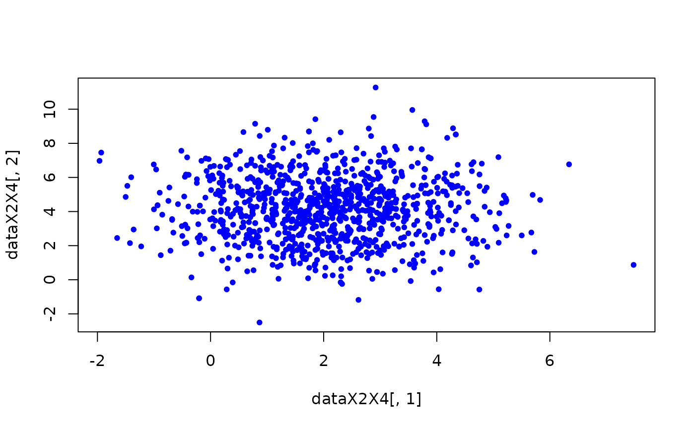

To demonstrate the R package algebraic.dist, we consider the relatively simple case of an observed sample of, we assume, i.i.d. random variables \(X_1,\ldots,X_n\) with unknown distribution \(F\).
We will use the R package algebraic.dist to estimate the distribution \(F\) using its empirical distribution.
library(algebraic.dist)
#> Registered S3 method overwritten by 'algebraic.dist':
#> method from
#> print.dist stats
#>
#> Attaching package: 'algebraic.dist'
#> The following objects are masked from 'package:stats':
#>
#> nobs, vcov
#> The following object is masked from 'package:grDevices':
#>
#> pdfWe define the parameters of the i.i.d. random sample with:
n <- 10000
# we sample n times from various univariate distributions
x <- mvn(mu = c(1,2,3,4,5),
sigma = diag(1:5))
data <- sampler(x)(n)We have observed a sample of size \(n=10^{4}\). We show some observations from this sample with:
head(data, n=6)
#> [,1] [,2] [,3] [,4] [,5]
#> [1,] 1.2845543 3.398079 2.951729 3.785315 4.869776
#> [2,] 0.8402895 2.959459 3.339789 1.564985 4.955497
#> [3,] 2.1558402 -0.429428 2.662396 2.170372 7.027400
#> [4,] 0.6135812 1.452813 5.639392 5.134374 4.126462
#> [5,] -0.2440418 1.497088 6.192345 5.088746 3.383651
#> [6,] 1.0974183 5.000943 5.898161 7.111352 7.204492
emp <- empirical_dist(data)
print(emp)
#> empirical_dist multivariate_dist dist
#> Mean:
#> [1] 0.9975941 2.0042305 3.0133161 4.0021187 5.0648135
#> Covariance:
#> [,1] [,2] [,3] [,4] [,5]
#> [1,] 1.00587722 -0.01785917 -0.011778150 -0.01829982 -0.011177551
#> [2,] -0.01785917 1.99965621 -0.039838901 0.01659584 0.017479911
#> [3,] -0.01177815 -0.03983890 3.013845000 0.08910386 -0.009197925
#> [4,] -0.01829982 0.01659584 0.089103859 4.03432110 -0.041178389
#> [5,] -0.01117755 0.01747991 -0.009197925 -0.04117839 5.121659332
#> Number of observations: 10000
nobs(emp)
#> [1] 10000
support <- sup(emp)
infimum(support)
#> [1] -2.845653 -3.132831 -3.346118 -3.473769 -3.539094
supremum(support)
#> [1] 5.129062 7.480566 9.423864 12.413379 13.321595
dim(support)
#> [1] 5Let’s compare some basic statistics of the sample with the empirical distribution:
mean(emp)
#> [1] 0.9975941 2.0042305 3.0133161 4.0021187 5.0648135
colMeans(data)
#> [1] 0.9975941 2.0042305 3.0133161 4.0021187 5.0648135
cov(data)
#> [,1] [,2] [,3] [,4] [,5]
#> [1,] 1.00587722 -0.01785917 -0.011778150 -0.01829982 -0.011177551
#> [2,] -0.01785917 1.99965621 -0.039838901 0.01659584 0.017479911
#> [3,] -0.01177815 -0.03983890 3.013845000 0.08910386 -0.009197925
#> [4,] -0.01829982 0.01659584 0.089103859 4.03432110 -0.041178389
#> [5,] -0.01117755 0.01747991 -0.009197925 -0.04117839 5.121659332
vcov(emp)
#> [,1] [,2] [,3] [,4] [,5]
#> [1,] 1.00587722 -0.01785917 -0.011778150 -0.01829982 -0.011177551
#> [2,] -0.01785917 1.99965621 -0.039838901 0.01659584 0.017479911
#> [3,] -0.01177815 -0.03983890 3.013845000 0.08910386 -0.009197925
#> [4,] -0.01829982 0.01659584 0.089103859 4.03432110 -0.041178389
#> [5,] -0.01117755 0.01747991 -0.009197925 -0.04117839 5.121659332
pdf(emp)(sampler(emp)(1))
#> [1] 1e-04
colMeans(sampler(emp)(100))
#> [1] 1.102593 2.120116 2.999782 4.038982 5.296524
nparams(emp)
#> [1] 0
params(emp)
#> NULL
expectation(emp, function(x) x)
#> $value
#> [1] 0.9975941 2.0042305 3.0133161 4.0021187 5.0648135
#>
#> $ci
#> [,1] [,2]
#> [1,] 0.9779369 1.017251
#> [2,] 1.9765149 2.031946
#> [3,] 2.9792903 3.047342
#> [4,] 3.9627516 4.041486
#> [5,] 5.0204573 5.109170
#>
#> $n
#> [1] 10000
X2X4 <- marginal(emp, c(2, 4))
rv <- sampler(X2X4)
# sample some data; could just use data directly
dataX2X4 <- rv(1000)
# scatter plot a 2d sample
plot(dataX2X4[,1], dataX2X4[,2], pch = 20, col = "blue")
emp2 <- rmap(emp, function(x) 2*x)
mean(emp2)
#> [1] 1.995188 4.008461 6.026632 8.004237 10.129627
print(emp2)
#> empirical_dist multivariate_dist dist
#> Mean:
#> [1] 1.995188 4.008461 6.026632 8.004237 10.129627
#> Covariance:
#> [,1] [,2] [,3] [,4] [,5]
#> [1,] 4.02350888 -0.07143666 -0.0471126 -0.07319927 -0.04471020
#> [2,] -0.07143666 7.99862485 -0.1593556 0.06638336 0.06991964
#> [3,] -0.04711260 -0.15935561 12.0553800 0.35641544 -0.03679170
#> [4,] -0.07319927 0.06638336 0.3564154 16.13728442 -0.16471356
#> [5,] -0.04471020 0.06991964 -0.0367917 -0.16471356 20.48663733
#> Number of observations: 10000
emp3 <- conditional(emp2, function(x) x[1] > 0)
print(emp3)
#> empirical_dist multivariate_dist dist
#> Mean:
#> [1] 2.571647 3.997939 6.034295 7.985009 10.132961
#> Covariance:
#> [,1] [,2] [,3] [,4] [,5]
#> [1,] 2.52347984 -0.03496311 -0.08935801 -0.01169760 -0.04026319
#> [2,] -0.03496311 7.97707764 -0.14941472 0.07069602 0.09099245
#> [3,] -0.08935801 -0.14941472 12.04081543 0.40868734 -0.05892454
#> [4,] -0.01169760 0.07069602 0.40868734 16.16099222 -0.12171638
#> [5,] -0.04026319 0.09099245 -0.05892454 -0.12171638 20.46950095
#> Number of observations: 8421